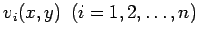
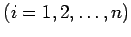

Ansatzverfahren
Man macht für die gesuchte Lösung u(x,y) einen Näherungsansatz der Art
Dabei soll z.B.
-
v0(x,y) die vorgelegte inhomogene Differentialgleichung erfüllen, und alle übrigen Ansatzfunktionen  sollen die zugehörige homogene Differentialgleichung erfüllen (Randmethode) oder
-
v0(x,y) den inhomogenen Randbedingungen genügen, und alle übrigen vi(x,y)  sollen den homogenen Randbedingungen genügen (Gebietsmethode).
Setzt man die Näherungsfunktion v(x,y) gemäß (19.139) im ersten Fall in die Randbedingungen, im zweiten Fall in die Differentialgleichung ein, so wird in beiden Fällen ein Fehler, der sogenannte Defekt
auftreten. Zur Bestimmung der Ansatzkoeffizienten ai kann man nach folgenden Prinzipien verfahren: